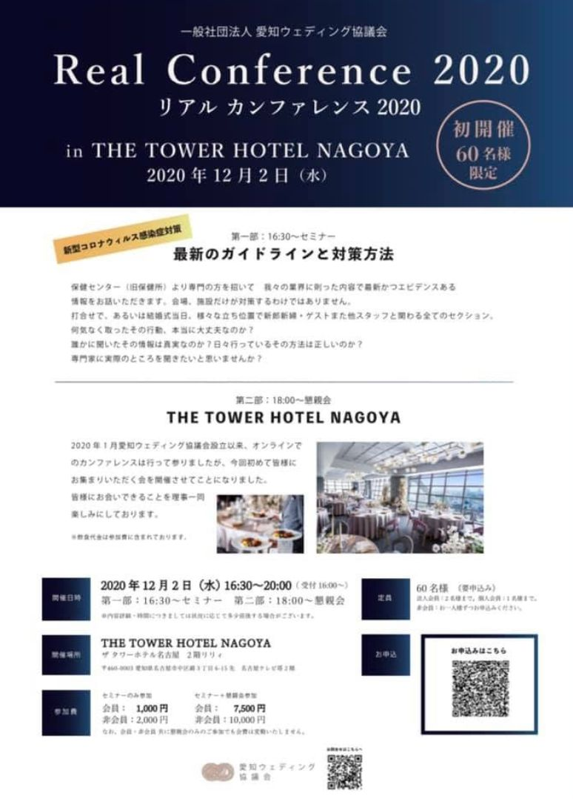

いよいよ10月も終盤になろうとしており、2020年も残すところ2か月と少しです。

我々ウェディング業界、そして新たに社会人として仲間となった貴重な人材にとって、2020年は、空白の1年だったと感じる方も多いのではないでしょうか。予定されていた式が消え、覚えるはずだった仕事の場面が失われ、会えるはずだった人に会えないまま数か月が過ぎました。特に今年入社された方には、申し訳ない気持ちさえあります。
ただ、この試練の中、失うだけでなく、新しい道を模索し、何か得るものを探し、歩幅は小さくなっても、下を向くことなく、新郎新婦を想って耐えてきたことで、きっと私たちは強くなっていると信じます。
愛知ウェディング協議会は、諦めることなく、時代に合わせて、大切なものを守っていくために活動してまいります。そしてこの2020年の最後に、皆さまとお顔を合わせ、今期の結びとして以下のイベントを開催することをご案内申し上げます。
《 新型コロナウイルス感染症 最新のガイドラインと対策方法 》
保健センター（旧保健所）より専門の方を招いて、我々の業界に則った内容で、最新かつエビデンスある情報をお話いただきます。
会場、施設だけが対策するわけではありません。打合せで、あるいは結婚式当日。様々な立ち位置で、新郎新婦、ゲスト、また他スタッフと関わる、全てのセクションが対象です。
この1年、私たちは手探りで対策を積み上げてきました。けれど「これで合っているのか」を確かめる機会は、ほとんどありませんでした。専門家に実際のところを聞きたいと思いませんか？（内容詳細は、多少の変更の可能性があります。）
※ 会員・非会員 共に、懇親会のみのご参加でも会費は変動いたしません。
60名（法人会員：2名まで／個人会員：1名まで／非会員：お一人ずつお申込みください）
① 下記のフォームにご入力ください。② 協議会よりメール返信にて、参加確定メールを送信します。③ 当日は参加確定メールを確認しますので、プリントアウトしたもの、またはスマホ画面のいずれかをご用意の上、会場へお越しください。
当日、THE TOWER HOTEL NAGOYA様のご厚意により、宿泊フロア（※ご宿泊客が最優先です。当日予定変更もございます）とレストラン「グリシーヌ」を見学させていただける予定です。同業だからこそ気になる部分を、直接見せていただける貴重な機会です。ご希望の方は、15時30分に間に合うようにお越しください。（参加連絡は不要です。）
会場の一画に、会員企業パンフレット展示スペースを設けます。当日、パンフレットを適宜お持ちいただき、ご自身でスペースへ設置をお願いします。（事前のお預りはいたしません。）
多くの皆さまとこれからのウェディング業界についての意見交換、そして来年度の協議会活動への議論ができますことを、心より楽しみにしております。画面越しではなく、同じ場所で顔を合わせて話す。この一年、当たり前ではなくなったその時間を、大切に過ごせればと思います。
一般社団法人 愛知ウェディング協議会